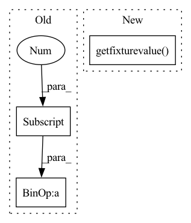

Pattern ID :25461
Before Change
df = iclaims_training_data
date_array = df["week"]
knot_idx = get_knot_idx(date_array=date_array, knot_dates=knot_dates)
expected_dates = get_knot_dates(date_array[0], knot_idx, date_array[1] - date_array[0])
expected_idx = np.array([228, 356])
assert np.all(knot_idx == expected_idx)After Change
]
)
def test_dates_args(dataset, date_col, knot_dates, knot_idx, request):
df = request.getfixturevalue( dataset)
date_array = df[date_col]
knot_idx2 = get_knot_idx(date_array=date_array, knot_dates=knot_dates)
freq = pd.infer_freq(date_array)
knot_dates2 = get_knot_dates(date_array[0], knot_idx, freq)In pattern: SUPERPATTERN
Frequency: 3
Non-data size: 3
Instances Fragment ID: 77673821
Project Name: uber/orbit
Commit Name: 31e08a1d53d8e40e430a5efc2bb583f57796db9a
Time: 2022-01-26
Author: wangzhishi@users.noreply.github.com
File Name: tests/orbit/utils/test_knots.py
M Class Name: AnonimousClass
N Class Name: AnonimousClass
M Method Name: test_dates_args(5)
N Method Name: test_dates_args(2)
M Parent Class:
N Parent Class:
M File Name: tests/orbit/utils/test_knots.py
N File Name: tests/orbit/utils/test_knots.py
M Start Line: 40
M End Line: 45
N Start Line: 61
N End Line: 66
Before Change
knot_idx = get_knot_idx(num_of_obs=df.shape[0], knot_distance=knot_distance)
assert knot_idx[0] == 0
assert knot_idx[3] - knot_idx[2] == knot_distance
knot_dates = get_knot_dates(date_array[0], knot_idx, date_array[1] - date_array[0])
// first knot always at the first date
assert knot_dates[0] == date_array[0]
// the first knot may not always equal knot distance due to appending the first date as the first knotAfter Change
]
)
def test_distance_args(dataset, date_col, knot_distance, request):
df = request.getfixturevalue( dataset)
date_array = df[date_col]
knot_idx = get_knot_idx(num_of_obs=df.shape[0], knot_distance=knot_distance)
assert knot_idx[0] == 0 Fragment ID: 77673820
Project Name: uber/orbit
Commit Name: 31e08a1d53d8e40e430a5efc2bb583f57796db9a
Time: 2022-01-26
Author: wangzhishi@users.noreply.github.com
File Name: tests/orbit/utils/test_knots.py
M Class Name: AnonimousClass
N Class Name: AnonimousClass
M Method Name: test_distance_args(4)
N Method Name: test_distance_args(2)
M Parent Class:
N Parent Class:
M File Name: tests/orbit/utils/test_knots.py
N File Name: tests/orbit/utils/test_knots.py
M Start Line: 25
M End Line: 34
N Start Line: 39
N End Line: 41
Before Change
knot_idx = get_knot_idx(num_of_obs=df.shape[0], num_of_segments=num_of_segments)
assert knot_idx[0] == 0
assert len(knot_idx) == num_of_segments + 1
knot_dates = get_knot_dates(date_array[0], knot_idx, date_array[1] - date_array[0])
// first knot always at the first date
assert knot_dates[0] == date_array[0]
After Change
]
)
def test_segments_args(dataset, date_col, num_of_segments, request):
df = request.getfixturevalue( dataset)
date_array = df[date_col]
knot_idx = get_knot_idx(num_of_obs=df.shape[0], num_of_segments=num_of_segments)
assert knot_idx[0] == 0
assert len(knot_idx) == num_of_segments + 1 Fragment ID: 77673822
Project Name: uber/orbit
Commit Name: 31e08a1d53d8e40e430a5efc2bb583f57796db9a
Time: 2022-01-26
Author: wangzhishi@users.noreply.github.com
File Name: tests/orbit/utils/test_knots.py
M Class Name: AnonimousClass
N Class Name: AnonimousClass
M Method Name: test_segments_args(4)
N Method Name: test_segments_args(2)
M Parent Class:
N Parent Class:
M File Name: tests/orbit/utils/test_knots.py
N File Name: tests/orbit/utils/test_knots.py
M Start Line: 11
M End Line: 16
N Start Line: 17
N End Line: 24